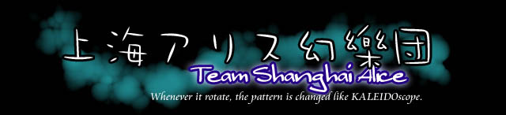
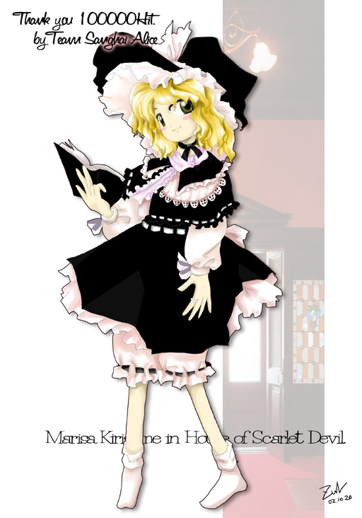

|  | |
|  | よおこそいらっしゃいませ
「上海アリス幻樂団」は、弾幕ＳＴＧ開発や音樂活動をしているサークルです。 <Shanghai Alice News>冬コミ速報 ３日目（月）も - 20b 「上海アリス幻楽団」です頒布物の情報は、東方遊戯に追加しました 現在、「東方紅魔郷」が再々販が行われています お取り扱い店舗は「虎の穴」「メロンブックス」「K=BOOKS」「あきばお〜」「ホワイトキャンバス」 （以上敬称略）の方で行われていますので、興味がありましたら宜しくお願いいたします〜m(__)m 東方紅魔郷 ver 1.02h アップデート出来ます。 東方紅魔郷 体験版 ver 0.13 がＤＬ出来ます。 <Latest updating>2002/12/01 東方紅魔郷 ver 1.02h パッチを追加2002/11/30 東方紅魔郷 ver 1.02g パッチを追加 2002/11/26 ＰＭＤページのリンク修正 2002/11/20 東方妖々夢の紹介ページ追加 2002/11/13 冬コミ速報 2002/10/28 リンクを２件追加 Last Modifyed 2002/12/01 <Contents> |